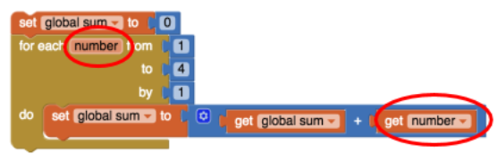
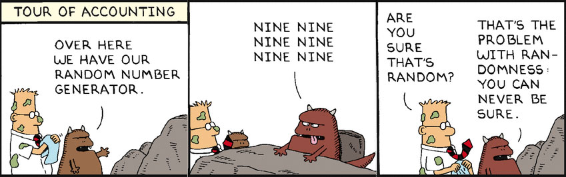

Write an if/else statement to express the following real life situation. Mary likes ice cream and always chooses chocolate unless there is no chocolate in which case she chooses strawberry. But if there’s no strawberry either then she settles for vanilla, which, for some reason, is always available.
If there is chocolate ice cream then mary chooses chocolate, else if there is strawberry ice cream, then she chooses strawberry, else she chooses vanilla.
We didn’t need it for the loop in this lesson, but the number element in the For each number loop is a local variable whose value changes automatically on each iteration of the loop. For example, in this loop number would start at 1 and then go to 2, 3 and 4. And this value can be used in the body of the loop, as shown in this example. Given that, trace through this loop and figure out what value global sum would have when the loop finishes.
I believe the output of the number would be 10 because 1+2+3+4= 10.
App Inventor’s random-integer block is an abstract model of randomness -- i.e., an abstraction of real randomness such as flipping a real coin. What would you say about the random-integer block if you ran the coin flipping simulation 10,000 times and the result was that it came up heads 55% of the time?
I believe this random-integer block is a good abstract model of randomness such as flipping a real coin because you are not guaranteed a 50/50 outcom.
"(POGIL) According to your results, does App Inventor's PRNG provide a good model of randomness?
App Inventor’s PRNG provides an adequate model of randomness. There is around a 50 percent chance for the coin flip to land on head. Meaning that there is around an even random number generator as there is around a 50 percent change on either landing on heads or tails. Although it is slightly increasing everytime we conduct a trial, from 49% to approximately 51%
(POGIL) A friend claims that flipping a coin 100 times and finding that it comes up heads only 45% of the time shows that the coin is biased. How should you reply?
My friend is being non scientific in the fact that he was only doing one trail, on the contrary, he should conduct more trails to obtain more accurate and precise conclusion. Doing one one trail leads to less opportunity to determine if the number bias is precise/accurate or not. While doing an increasing amount will lead to a closer result to determine if it is truly 50:50. I would tell my friend to do more trials, enough when there becomes a trend in the percentage of heads. Then they can reach a conclusion, not after the first trial.
Because we are using a coin flip app, this experiment really tests only that App Inventor's random integer block generates a 1 around half the time. Is this a sufficient test for App Inventor's PRNG? What other experiments might you do to increase your confidence in App Inventor’s PRNG?
No, I believe this isn't a sufficien test for App Inventors PRNG because of the limited trials and range. Other experiments I might do to increase my confidence of App Inventor's PRNG is increase the trials and range that App Inventor can do.
Consider the following Dilbert cartoon? Would it be possible for a PRNG to spit out 6 NINEs in a row?
I believe it is possible to spit out 6 nines in a row but it would be highly unlikely since PRNG is a good abstraction or true randomness.
Are slot machines fair? Why or why not?
I believe slot machines are fair since it also uses the PRNG in its system, as I said before PRNG is a good abstraction of true randomness.
Is it possible to devise a method that would allow you to win consistently on a slot machine?
I believe it is impossible to devise a method that would allow you to win consistently on a slot machine because PRNG is true randomness, the only way you could win consistently is if you go and change the code of the system.